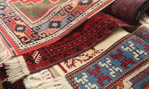
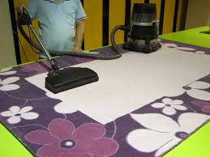
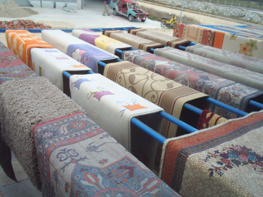

Kilim Yikama Hizmetimiz
El emeği göz nuru kilimleriniz renkleri karıştırılmadan, zedelenmeden, uygun temizlik ürünleri ile uygun su sertlik seviyesinde yıkanır. Kilim yıkamak halı yıkamak gibi değildir. Farklı bir teknik kullanılarak yıkanması gerekir.
  Profesyonel kilim temizliği için öncelikle kilimi tanımak, yapısını bilmek gerekir. Kilimler el dokuma halıları gibi kök boyası kullanılmış, yün ve ipek ile dokunmuş ise bu kilimlerin temizliği özen ve hassasiyet gerektirir. Kilimler halılara göre daha hassas yapıya sahiptirler. Kök boyası ile boyalı olan kilimler renk sabitleyici kullanılmadan yıkanmamalıdır. İpek karışımlı veya ipek olan kilimler normal halı yıkama şampuanları ile yıkanırsa büyük ölçüde zarar görür. Işılak halı yıkamada yıkanan kilimleriniz cinsine göre ayırılıp gerekli yıkama tekniği tespit edildikten sonra yıkanmaktadır. Bu nedenle olası hiçbir problem ile karşılaşmamaktayız.
Kilimlerinizi evinizden teslim alan personelimiz cinsine göre kiliminize uygulanacak yıkama tekniği hakkında size bilgi verecektir. Kök boyası kullanılmış olan kilimlerinizi evde bilinçsizce siler yada çamaşır makinesinde yıkarsanız tüm renkleri birbirine karışır. Böyle bir işlem sonucunda kiliminize telafisi mümkün olmayan hasar vermiş olursunuz. Kilimlerinizin temizliği ile ilgili her türlü sorunuz için bizi arayabilirsiniz.